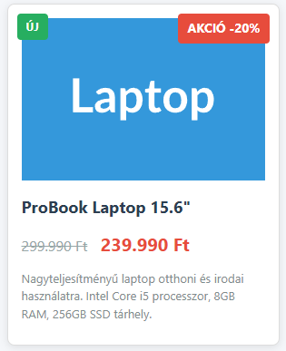

Akciós termék doboz - Pozícionálás gyakorlat
Célkitűzés
Egy termékkártya létrehozása (termek_akcio.html), amely bemutatja a relatív és abszolút pozícionálás működését. A termék képére egy "AKCIÓ" címkét helyezünk el CSS pozícionálással.

CSS fájl beillesztése
Töltsd le a termek_alap.css fájlt a Moodle-ből ugyanabba a mappába, ahol a HTML fájlod lesz! Ez tartalmazza az oldal és a termékdoboz alapformázását. Kapcsold be a HTML fájlodba a megfelelő módon.
1. HTML alapstruktúra
Készítsd el a termek_akcio.html fájlt a szokásos HTML5 struktúrával. Az oldalnak legyen:
- Egy főcíme ("Akciós termékek")
- Egy konténer div
termek-kontenerosztállyal - A konténeren belül egy kép és egy akciós címke
2. Termék konténer felépítése
A termek-kontener div-be helyezz el:
- Egy termékkép (
<img>elem), amely lehet bármilyen termék fotója (pl. laptop.jpg)- Tipp: Használhatsz placeholder képet:
https://placehold.co/300x200/3498db/ffffff?text=Laptop - Adj alt szöveget a képhez!
- Tipp: Használhatsz placeholder képet:
- Egy span vagy div elemet
akcio-cimkeosztállyal, amelybe az "AKCIÓ -20%" szöveg kerül - A kép után adj hozzá egy címsort a termék nevével
- Egy div-et, amiben két span található
eredeti-arésakcio-arosztályokkal. Eredeti ár áthúzva és új ár kiemelve. - Egy rövid termékleírást bekezdésbe.
3. CSS pozícionálás beállítása
A HTML fájlban hozz létre egy <style> elemet a <head> részben. Itt fogod beállítani a pozícionálást.
Konténer beállítása
A termek-kontener osztály kapjon:
- 300 pixel szélességet
- Fehér háttérszínt
- Vékony szürke keretet
- Belső térközt (padding) 15 pixel
- És ami a legfontosabb: relatív pozícionálást!
Miért kell a relative? Ez hozza létre azt a "koordináta-rendszert", amihez képest az absolute elemeket pozícionálhatjuk.
Akciós címke pozícionálása
Az akcio-cimke osztály beállításai:
- Abszolút pozícionálás (így kivesszük a normál dokumentumfolyamból)
- Helyezd a konténer jobb felső sarkába
- Tipp: Használd a
topésrighttulajdonságokat, 10-10 pixel távolsággal
- Tipp: Használd a
- Piros háttérszín (
#e74c3c) - Fehér szövegszín
- Padding a szöveg körül (5px vízszintesen, 10px függőlegesen)
- Félkövér betűtípus
4. Kép formázása
Állítsd be, hogy a termék képe:
- Teljes szélességben kitöltse a konténert
- Megtartsa az arányait (
height: auto) - Blokkszintű elem legyen (hogy ne legyen alatta üres hely)
5. Kísérletezz a pozícionálással!
Különböző pozíciók kipróbálása
Próbáld ki az akciós címkét más pozíciókban is:
- Bal felső sarok:
top: 10px; left: 10px; - Jobb alsó sarok: mit kell használni?
- Pontosan középen:
top: 50%; left: 50%; transform: translate(-50%, -50%);
Mi történik relative nélkül?
Kommenteld ki ideiglenesen a position: relative sort a konténerből! Hova kerül a címke? Miért?
Extra címkék hozzáadása
Adj hozzá egy második címkét "ÚJ" felirattal a bal felső sarokba! Használj zöld hátteret.
6. Ár és leírás formázása
Formázd meg a termék információit:
- A termék neve legyen nagyobb méretű és félkövér
- Az eredeti ár legyen áthúzott (
text-decoration: line-through) és szürke - Az akciós ár legyen nagyobb és piros színű
- A leírás legyen kisebb betűméretű és szürke
Ellenőrzési lista
- [ ] Van DOCTYPE és megfelelő HTML struktúra?
- [ ] A külső CSS fájl be van linkelve?
- [ ] A termék konténer relative pozícionálású?
- [ ] Az akciós címke absolute pozícionálású?
- [ ] A címke a megfelelő sarokban van (top/right értékekkel)?
- [ ] A kép responsive (width: 100%)?
- [ ] Van termék név, ár és leírás?
- [ ] A címke a kép fölött jelenik meg?
- [ ] Kipróbáltad más pozíciókban is a címkét?
Megoldás feltöltése
Töltsd fel a kész termek_akcio.html fájlt a Moodle-re.
Hasznos tipp: A böngésző Fejlesztői eszközeiben kapcsold ki/be a position tulajdonságokat, hogy lásd, hogyan változik az elrendezés!